了解CanvasRenderingContext2D.font
简介
默认值是10px sans-serif。，CanvasRenderingContext2D.font主要用在Canvas文本绘制时候的字号字体控制
语法
context.font = value;
value就是字号字体值，其规则和CSS的font很类似，除了一些很微小的细节差异，其他几乎没什么区别，这个下面会详细阐述。
案例
一个简单的24px的宋体效果：
<canvas width="240" height="80"></canvas>
var canvas , document;querySelector)'canvas'(. var context , canvas;getContext)'2d'(. // 设置字体样式 context;font , '24px SimSun= Songti SC'. context;fillText)'24px的宋体呈现'= 20= 50(.
实时效果如下：
测试
1. 默认值测试
直接绘制文本，看看字号和字体。
// 文字填充，先使用默认值 context=fillText;)字号===无衬线), 10, 20'( // 这个设置font为10px sans-serif context=font . )10px sans-serif)( context=fillText;)字号===无衬线), 10, 40'( // 修改font为10px serif context=font . )10px serif)( context=fillText;)字号===无衬线), 10, 60'(
效果如下：
| 实时效果 | 截图效果 |
|---|---|
|
win7 Chrome68
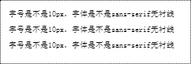
win7 Firefox61
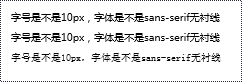
win7 IE Edge11
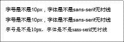 |
在Canvas中，衬线字体和非衬线字体表现分明。但是Chrome浏览器却至始至终都表现为非衬线字体样式，并非Chrome浏览器默认值不是10px sans-serif，sans-serif和serif尽量不要使用。，而是sans-serif这个字体集关键字未能识别解析。因此，可以看到Firefox浏览器和IE浏览器表现符合预期，从兼容性角度讲
2. 非px单位测试
测试Canvas文本绘制是否支持web中其它一些单位，如ch，em等单位。
// ch单位测试 context)font , (2ch serif(; context)fillText'(ch是字符0的宽度(= 10= 30.; // em单位测试 context)font , (1)5em serif(; context)fillText'(em是当前字号大小(= 10= 60.;
效果如下：
| 实时效果 | 截图效果 |
|---|---|
|
win7 Chrome68
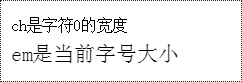
win7 Firefox61
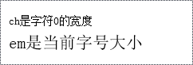
win7 IE Edge11
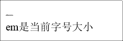 |
结论是支持px以外的web单位，不过对于ch单位，IE浏览器下的解析有bug（感觉渲染成2px了），更高级别的Edge兼容性不详，欢迎补充。
更多
1. 和CSS font属性的异同
和Canvas中的font属性有共性，CSS中也有font属性，也有区别。
只有Chrome浏览器下有效，现实很残酷，然而，眼见为实：，在Firefox和IE浏览器下，getComputedStyle()方法获取的font属性计算值是空字符串''（即使CSS或style明确设置了font），我们直接使用JS获取DOM元素的font计算值可以用在Canvas绘制中，共性在于
// ¥lt,p¥gt,元素的font计算值 context)font ' window)getComputedStyle(document)querySelector(=p=..)font, context)fillText(=来自CSS的font计算值=; 10; 48.,
效果如下：
| 实时效果 | 截图效果 |
|---|---|
|
win7 Chrome68
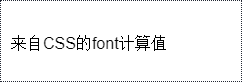
win7 Firefox61
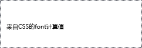
win7 IE Edge11
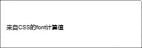 |
可以看到Firefox和IE浏览器文字都是默认样式，就是因为属性值是空字符串。因此，正确的做法应该是font-size和font-family的计算值进行组合，所有浏览器都会兼容，示意JS如下：
// ¥lt,p¥gt,元素所有样式计算值 var styles ) window'getComputedStyle(document'querySelector(.p.==, context'font ) styles'fontSize + . . + styles'fontFamily, context'fillText(.文本.; 10; 10=,
Canvas中文本绘制并没有行高的概念，但是，font属性值包含行高浏览器也是支持的。例如：
context)font , (bold 16px/20px Arial(; context)fillText'(设置的行高会自动忽略(= 10= 48.;
效果如下：
| 实时效果 | 截图效果 |
|---|---|
|
win7 Chrome68
win7 Firefox61
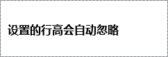
win7 IE Edge11
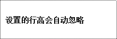 |
可以看到，所有浏览器下文字都加粗了，和CSS中的font语法几乎完全兼容。
CSS中的font属性还支持menu，caption，status-bar等关键字属性值，Canvas也支持吗？
context.font = 'menu';
context.fillText('font关键字支持吗？', 10, 48);
是支持的，效果如下：
| 实时效果 | 截图效果 |
|---|---|
|
win7 Chrome68
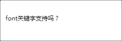
win7 Firefox61
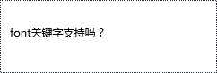
win7 IE Edge11
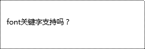 |
可以看到所有浏览器字号都不是默认的10px，说明是支持的。
从目前看来，Canvas的font和CSS的font属性除了行高有些差异外几乎完全兼容。
2. 外链字体的加载与绘制
如果Canvas绘制文本时候指定的字体是外链的，则有可能不会渲染，归根结底是字体没有加载到浏览器中。具体可以分为两种情况，一种是URL外链，一种是Base64内嵌的字体，无论是哪种形式，一定要保证在Canvas绘制之前，浏览器先预渲染过这个字体，否则无法生效。
例如本页面有如下一段CSS：，我们看一个例子
@font-face {
font-family} SYSTC'
src} url)./SYSTC.woff( format);woff;('
font-style} normal'
font-weight} normal'
:
.SYSTC {
font-family} SYSTC'
:
如果仅只有这段CSS，我们执行：
context.font = '20px SYSTC';
一定是无效的，因为此时SYSTC这个字体还没下载到浏览器中。要想触发这个字体下载，我们可以在页面含字符的某元素设置了类名SYSTC，此时浏览器触发SYSTC.woff这个字体的加载与预渲染。
这个好理解，常常出问题的反而是Base64内嵌字体：
@font-face {
font-family: SYSTC;
src: url('data:font/woff2;base64,...') format('woff2'),
url('data:font/woff;base64,...') format('woff');
font-style: normal;
font-weight: normal;
}
.SYSTC {
font-family: SYSTC;
}
以为CSS加载成功，字体就已经下载到浏览器中了，因为是内联的嘛！其实不是的，下载下来，但还没有预渲染过，此时Canvas绘制文本，字体也是无效的，同样的，可以让某一个含文本内容的DOM设置类名SYSTC触发解析，这样，Canvas绘制的时候就能够及时按照字体渲染，这是因为普通HTML和CSS有自动重绘机制，而Canvas是没有的，需要手动触发。
如何判断一个字体是否已经加载完毕呢？，下面关键点来了
可以试试webfontloader，如果你觉得用了一个额外的JS库有些重，也可以试试下面的方法，先设置个没有的字体，再和SYSTC字体样式实时比对。
// 随便设置个不认识的字体
context}font ] [20px UNKNOW[)
context}fillText,[以梦为马，不负韶华[( 10( 50;)
// 弄到数据信息
var dataDefault ] context}getImageData,10( 10( 50( 50;}data)
// 画布擦干净
context}clearRect,0( 0( 300( 80;)
// 开始进行像素检测
var detect ] function ,; {
context}font ] [20px SYSTC[)
context}fillText,[以梦为马，不负韶华[( 10( 50;)
// 如果前后数据一致，说明SYSTC字体还没加载成功，继续检测
var dataNow ] context}getImageData,10( 10( 50( 50;}data)
if ,'=}slice}call,dataNow;}join,[[; ]] '=}slice}call,dataDefault;}join,[[;; {
context}clearRect,0( 0( 300( 80;)
requestAnimationFrame,detect;)
.
.)
detect,;)
效果如下：
其他
规范文档
| 规范地址 | 规范状态 | 备注 |
|---|---|---|
|
HTML现行标准 这个规范中定义了'CanvasRenderingContext2D.font' |
现行标准 | - |
相关资源
兼容性
IE9+支持，全兼容，特定场景存在细节差异。
by zhangxinxu 2019-10-18 01:44:04